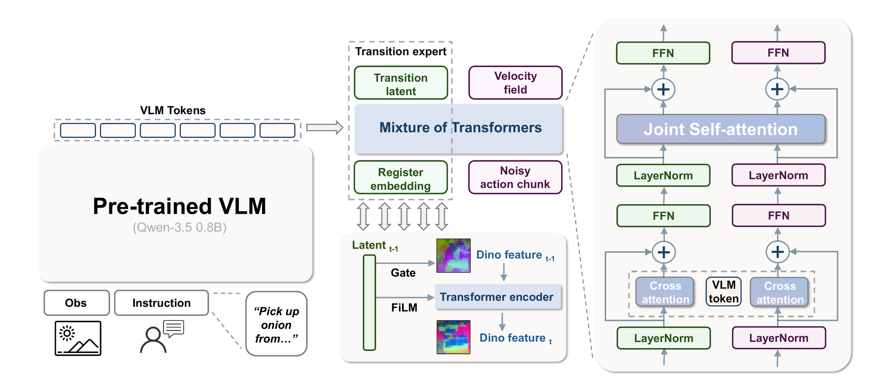
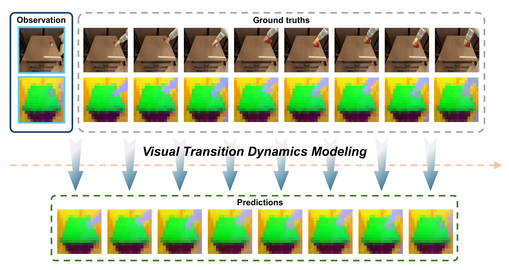
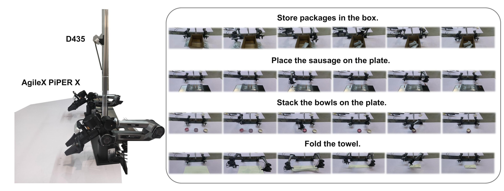
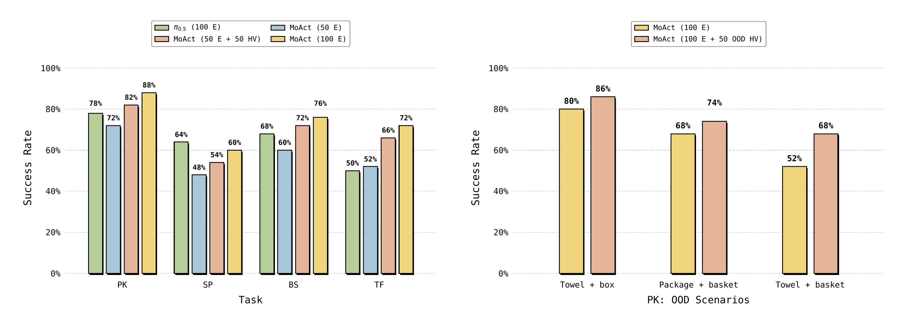
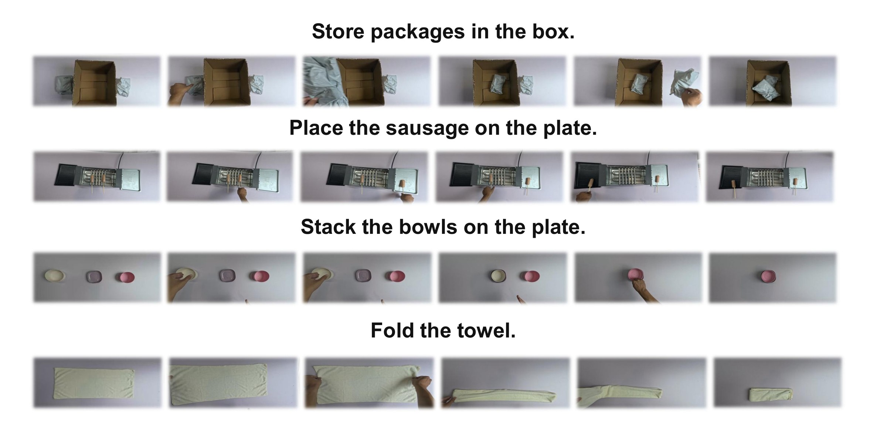
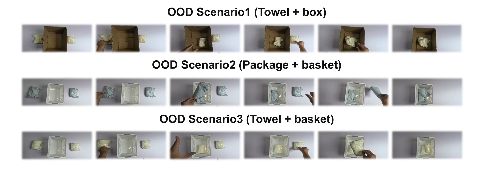

Modeling future observations allows vision-language-action (VLA) models to anticipate scene changes and improve action generation. However, extracting latent representations that retain the information needed for accurate prediction and control remains a key challenge. To address this challenge, we introduce MoAct, a framework that uses compact visual-transition tokens to model changes in future visual context and guide action generation. MoAct learns visual-transition dynamics from large-scale video data and connects a visual-transition dynamics expert with an action expert through a dual-stream Mixture-of-Transformers (MoT) architecture. This design allows predicted scene changes to guide policy learning. Extensive experiments in simulation and the real world show that MoAct outperforms existing future-guided methods. Egocentric human videos also help MoAct retain much of its performance with fewer robot demonstrations. For scene adaptation, MoAct requires only additional egocentric human videos from the target scenes, with no new robot demonstrations.
MoAct represents scene evolution as transitions between adjacent observations, rather than as independently predicted future states.

Architecture. A Qwen3.5-0.8B backbone encodes the current observation and the language instruction. The visual-transition dynamics expert uses learnable queries to produce eight transition tokens, each trained to encode the change from a preceding DINOv3 feature grid to its successor. Through the dual-stream Mixture-of-Transformers, these tokens enter the action expert as layer-wise keys and values, and the action expert generates action chunks by flow matching. The DINOv3 encoder and the feature predictor are used only during training.
Training. In Stage 1, MoAct learns general visual-transition dynamics from a large-scale mixture of robot and egocentric human manipulation videos. In Stage 2, these dynamics are adapted to the target scenes while a newly initialized action expert is trained on robot demonstrations.

Success rates (%) in SimplerEnv. Bold denotes the best result in each column. Baseline results are taken from WoG, with averages recomputed from the listed per-task values.
Table 1. Google Robot evaluation in SimplerEnv. Success rates (%) under Visual Matching and Variant Aggregation.
| Visual Matching | Variant Aggregation | Overall | ||||||||
|---|---|---|---|---|---|---|---|---|---|---|
| Model | Size | Pick Coke Can | Move Near | Drawer | Avg. | Pick Coke Can | Move Near | Drawer | Avg. | Avg. |
| π0 | 3B | 72.7 | 65.3 | 38.3 | 58.8 | 75.2 | 63.7 | 25.6 | 54.8 | 56.8 |
| π0-FAST | 3B | 75.3 | 67.5 | 42.9 | 61.9 | 77.6 | 68.2 | 31.3 | 59.0 | 60.5 |
| OpenVLA | 7B | 16.3 | 46.2 | 35.6 | 32.7 | 54.5 | 47.7 | 17.7 | 40.0 | 36.3 |
| GR00T N1 | 2B | 47.0 | 70.0 | 18.1 | 45.0 | 78.8 | 62.5 | 13.2 | 51.5 | 48.3 |
| Moto | 0.5B | 74.0 | 60.4 | 43.1 | 59.2 | – | – | – | – | – |
| VITA | 2B | 57.5 | 55.8 | 58.9 | 57.4 | – | – | – | – | – |
| DeFI | 2B | 54.2 | 60.7 | 38.6 | 51.2 | 53.9 | 58.2 | 24.0 | 45.4 | 48.3 |
| WoG | 7B | 89.0 | 82.5 | 62.5 | 78.0 | 87.9 | 75.0 | 19.3 | 60.7 | 69.4 |
| MoAct (Ours) | 1B | 96.0 | 77.1 | 59.7 | 77.6 | 87.7 | 65.0 | 44.7 | 65.8 | 71.7 |
Table 2. WidowX evaluation in SimplerEnv. Grasp rate and task success rate (%) across the four tasks.
| Spoon on Towel | Stack Blocks | Carrot on Plate | Eggplant in Basket | Overall | |||||||
|---|---|---|---|---|---|---|---|---|---|---|---|
| Model | Size | Grasp | Success | Grasp | Success | Grasp | Success | Grasp | Success | Grasp | Success |
| π0 | 3B | 45.8 | 29.1 | 25.0 | 0.0 | 50.0 | 16.7 | 91.6 | 62.5 | 53.1 | 27.1 |
| π0-FAST | 3B | 62.5 | 29.1 | 58.5 | 21.9 | 54.0 | 10.8 | 83.3 | 66.6 | 64.6 | 32.1 |
| OpenVLA | 7B | 4.1 | 0.0 | 33.0 | 0.0 | 12.5 | 0.0 | 8.3 | 4.1 | 14.5 | 1.0 |
| GR00T N1 | 2B | 83.3 | 62.5 | 54.2 | 45.8 | 70.8 | 16.7 | 41.7 | 20.8 | 62.5 | 36.5 |
| UniVLA | 7B | 76.4 | 52.8 | 66.7 | 2.8 | 79.2 | 55.6 | 87.5 | 66.7 | 77.5 | 44.5 |
| ViPRA | 7B | 79.2 | 66.7 | 62.5 | 54.2 | 54.2 | 50.0 | 91.7 | 79.2 | 71.9 | 62.5 |
| WoG | 7B | 95.8 | 79.2 | 75.0 | 33.0 | 70.8 | 50.0 | 100.0 | 91.7 | 85.4 | 63.5 |
| MoAct (Ours) | 1B | 87.5 | 83.3 | 79.2 | 45.8 | 75.0 | 70.8 | 95.8 | 62.5 | 84.4 | 65.6 |
The released checkpoints, evaluation code, and episode-level results are available in the anonymous repository.
We evaluate MoAct on an AgileX PiPER X tabletop dual-arm platform. Three Intel RealSense D435 cameras provide one external view and two wrist-mounted views. The evaluation suite comprises package storage (PK), sausage placement (SP), bowl stacking (BS), and towel folding (TF).

MoAct fine-tuned with 100 robot demonstrations per task.

Starting from MoAct trained on 100 robot demonstrations, we add 50 egocentric human videos collected in out-of-distribution package-storage scenes, without collecting additional robot demonstrations.


Episodes generated by the released checkpoints under the SimplerEnv evaluation protocol. Only successful episodes are shown.
Policy-camera views, motion-interpolated to 30 fps and upsampled 2× for display. Google Robot videos are played at 3× and WidowX videos at 2× speed; each video ends 1.5 s after task success.
@misc{anonymous2026moact,
title = {MoAct: Learning Visual Transition Dynamics for Robot Action Generation},
author = {Anonymous},
year = {2026},
note = {Under review}
}